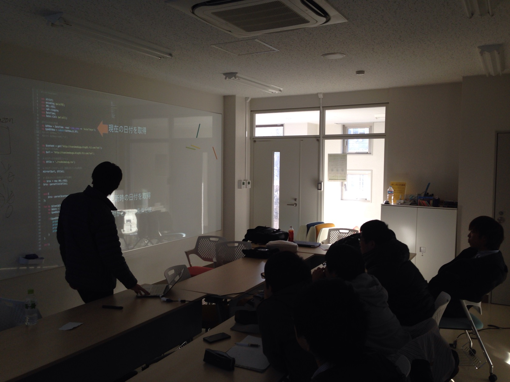

宇都宮大学生がつくる勉強会です
今までの勉強会の内容を紹介します
2014年12月18日（木），ラーニング・コモンズ3Fにて開催しました

2015年01月9日（金），ラーニング・コモンズ1Fにて開催しました
| 時間 | 発表者 | タイトル |
|---|---|---|
| 14:00 - 14:05 | 開会のあいさつ | |
| 14:10 - 15:00 | K-Akimasa | Webについて |
| 15:05 - 15:55 | D-Design.Lab(松山大介) | プログラマのためのUIデザイン基礎 |
| 15:55 - 16:05 | 休憩 | |
| 16:05 - 16:55 | techpo__nn | 競技プログラミングの始め方 |
| 17:00 - 17:50 | 小松 | Blenderで作るリアルなマテリアル |
| 17:50 - 17:55 | 閉会のあいさつ |